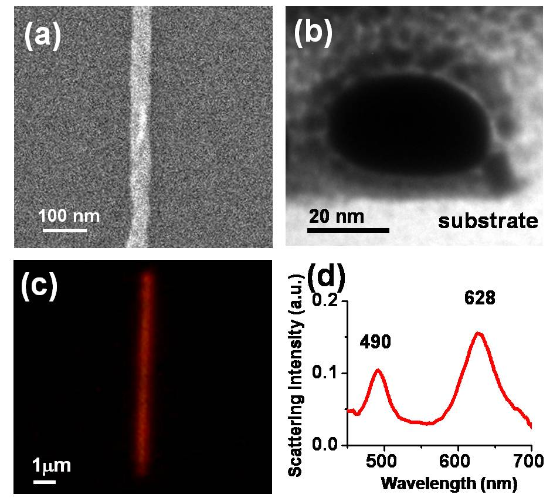

研究成果
由於科技的快速發展，材料製造技術尺寸已由微米、次微米、而逐漸發展到奈米級精密處理，因此「奈米材料及技術」的地位也日益重要，並且被公認為本世紀最重要的科技之一，世界各國都投入大量的心血和金錢從事其相關的研究。本實驗室致力於發展掃描探針顯微術 (SPM) 及相關奈米技術，目前研究成果如下：奈米材料、奈米感測、奈米檢測及奈米微影。
由於科技的快速發展，材料製造技術尺寸已由微米、次微米、而逐漸發展到奈米級精密處理，因此「奈米材料及技術」的地位也日益重要，並且被公認為本世紀最重要的科技之一，世界各國都投入大量的心血和金錢從事其相關的研究。本實驗室致力於發展掃描探針顯微術 (SPM) 及相關奈米技術，目前研究成果如下：奈米材料、奈米感測、奈米檢測及奈米微影。
藉由三段升溫爐管成長，將處理好的基板置入中溫區段，將裝有鋅粉與碳粉的氧化鋁鉗鍋置入高溫區段，以機械幫浦抽真空數分鐘後通入氬氣與氧氣，藉由Thermal evaporation成長出氧化鋅奈米線。
先將醋酸鋅酒精溶液中加入適當量的氫氧化鈉調整pH值，放入烘箱內三小時，製得晶種液；接著把晶種液佈於基板上，放入硝酸鋅與HMTA混合水溶液中，在烘箱內反應七小時，即成長出氧化鋅奈米線。
利用原子力顯微鏡 (atomic force microscopy, AFM)的微影技術，以探針機械力加工方式，在鍍有PMMA薄膜的矽基板上，刻畫出奈米溝槽，再利用離子濺鍍或電子束蒸鍍，鍍上約20 nm厚的金屬，進行去阻劑製程 (lift-off) ，如此可得到金屬奈米線陣列。而以白光光源，在光學顯微鏡暗視野 (dark field) 模式下，可得到奈米線的散射光影像，也就是區域表面電漿共振 (localized surface plasmon resonance, LSPR) 的光學影像，並將散射光收集到光纖，送進光譜儀，分析其共振光譜特性 。
本實驗利用氧化鋅奈米複合材料，作為氮氧化物感測元件，圖1、圖2顯示奈米材料成長在有電極之Si晶圓上及形貌。
將製備的三元奈米複合材料氣體感測晶片，放置在金屬腔體內，並照射LED光源，通入NO2氣體，量測其響應值的變化。
為了將此氮氧化物感測晶片應用在各個環境，本實驗室與國家研究院儀器科技研究中心共同開發可攜式氮氧化物氣體感測器，圖5為利用手持感測器所測量不同濃度之響應值，其解析度範圍為5ppb~1000ppb。
半導體氧化物奈米材料具有特殊的物理與化學特性，有很多應用的可能性，以原子力顯微術奈米微影方法，可製作單一氧化鈦奈米點感測器。首先，製作單一鈦奈米線，並連接金電極。接著，再製作單一氧化鈦奈米點，以形成金屬－半導體－金屬結構，並應用於紫外光感測。感測原理是基於紫外光照射下，氧分子在氧化物奈米點表面的脫附，而造成導電性變化。選擇奈米點位置在鈦奈米線中間或其與電極接面，可製作出歐姆型 （ohmic） 和蕭特基（Schottky） 型兩種類型紫外光感測器，而後者靈敏度遠高於前者。
透過結合AFM奈米機械加工、奈米氧化與光學微影技術，以製作 (1) 單一氧化鈦奈米點連接於鈦奈米線，或 (2) 金電極的金屬－氧化物－金屬結構的方法，可得到直徑約 100 nm 的氧化鈦奈米點，分別連接於鈦奈米線或是金電極上，作為歐姆型、蕭特基型兩種不同的感測器架構。
紫外光感測上，歐姆型感測器靈敏度為 0.22 (從 14 到 17 nA)，恢復時間為78 秒；蕭特基型感測器靈敏度為 310 (從 0.26 到 83 nA)，是歐姆型的1400 倍，恢復時間為 1.8 秒，只有歐姆型的四十分之一，整體性能優異許多。

Chen et al. prepared a series of ZnO–CdS–Ag2S ternary nanostructures with different amounts of Ag2S were prepared using simple and low-cost successive ionic layer adsorption and reaction (SILAR) and a chemical precipitation method. The ZnO nanowires, with a diameter of ∼100 nm and a length of ∼1 μm, were modified by coating CdS and Ag2S as shown in Fig. 1.

For Photocatalytic Performance, a 1.5 × 1.5 cm2 wafer was used. The solution used was 5 mL of methyl orange (10 μmol L−1). Firstly, these are kept in dark for 1 hour to obtain an adsorption and desorption equilibrium and then illuminated using a 50 W Xe light equipped with a UV cut-off filter (λ > 400 nm) for 75 minutes. (Fig. 2). The ZnO–CdS–Ag2S ternary nanostructures were found to be more efficient than ZnO nanowires, ZnO–CdS nanowires, and ZnO–Ag2S nanowires.

In another study, Chiang et al. reported the enhanced photocatalytic activity of ZnO nanowires (NWs) co-modified with Cu2O and Ag nanoparticles (NPs). (Fig. 3)
The photocatalytic activity of the NWs is evaluated by degrading a 50 μM rhodamine B solution under the illumination of a halogen lamp. All NP modified NWs show better efficiencies than as-grown ones and co-modified NWs have the best performance. The zeroth-order kinetic constant of the co-modified NWs is 0.32 μM min-1, which is 3.2 times as high as that of as-grown ones. (Fig. 4)
目前已利用導電性 AFM 在不同處理後的ITO 導電玻璃上量得表面電性變化(圖1)，並在POPD-MEH-PPV薄膜上得到 50 nm 解析度的光學影像(圖2)，此種技術在有機電致發光薄膜研究上為首創，目前我們正進行區域電壓電流及光譜量測，預期將有更多重要結果產生，而這些資料對元件分析也有極大助益。
鐵電陶瓷材料，目前已利用電力顯微術 (EFM) 在 PZT 薄膜上量測原始極區大小及分佈，並利用外加電壓產生單一極化區(圖1)，並定量測量在此區域之壓電係數d33。
利用PFM分析PZT薄膜，其表面形貌如圖2(a)所示，圖2(b)為殘留極化的分佈影像，其中暗區經過更詳細分析後，發現是非鐵電相。在掃描時加一直流電壓，便可極化探針下面區域，產生單一極化區，再利用PFM獲得極化後影像。
利用PFM分析PZT薄膜，可以得到表面形貌和殘留極化影像，其中暗區經過更詳細分析後，發現是非鐵電相。在掃描時加一直流電壓，便可極化探針下面區域，產生單一極化區，再利用PFM獲得極化後影像(圖 3)。
利用磁力顯微術(MFM)來分析磁記錄材料(圖1)，磁性薄膜的表面磁區及磁壁分布，最近觀察到在115 nm鈷薄膜上的非對稱 Bloch 磁壁及 cross-tie 磁壁有共存現象，為文獻上首次記載(圖2)，這些可用來測試微磁學理論計算的正確與否。另外我們也在同一鈷薄膜上觀察到因結構缺陷所產生的磁性結構(圖3)。

發展摩擦力顯微術 (FFM)，力調變顯微術 (FMM) 等等以量測表面力學特性，與清大化工系陳壽安教授合作，利用材料表面彈性係數差異，成功測量出 PPV 及 CNPPV 混合高分子薄膜之相分離現象(圖 4)。
此外利用自製之彎式光纖探針，在經由準分子雷射加工後之高深寬比 polycarbonate 微渠道結構底部，作表面粗糙度量測(圖 5)，未來將利用此種技術測量生物組織培養之表面形貌。
本實驗室藉由Fiber Puller自製之光纖探針，利用近場光學顯微術(NSOM)於MEH-PPV導電高分子得到表面形貌和穿透近場光學影像(圖6)，光學影像的解析度可以達到40~60nm。(目前商用光纖探針解析度約100nm左右)。
以最直接的奈米雕刻方式便可製作奈米金屬結構，不過解析度受限於探針大小與樣品本身的厚度，因此多半選擇鑽石探針或力學常數較大的探針，避免在刻畫時，造成探針破壞，而樣品通常也是較軟的材質。例如利用AFM探針在金薄膜上雕刻出清大材料系創立30週年紀念(圖1)。
在我們的基板上 ，先鍍一層PMMA高分子，經由AFM探針加工，所打出的奈米孔陣列，鍍上一層金膜，再經liftoff後形成奈米點陣列。如圖(2)所示。

將矽表面經過一般清潔步驟，去除表面自生氧化層後，於高摻雜矽探針加一負偏壓，氧化出清華材料系系徽(圖1)。
在1 m SiO2/Si的基板上，利用電子束蒸鍍上厚度為15 nm之鎳膜。當利用接觸式AFM(contact mode AFM)於掃描時，外加一負偏壓於探針上，改變掃描區域，可以氧化出不同大小之氧化鎳圖案(圖2)。
一般接觸式AFM其探針力學常數較小，在探針外加偏壓時，容易受到靜電力的影響，較不適合製作需高穩定性與重複性的氧化鎳點。所以改採用輕敲式AFM(tapping mode AFM)製作氧化鎳點(圖 3)，原因在於其探針的力學常數較大。

在SiO2上鍍PMMA再利用機械蝕刻可做出奈米溝槽，再鍍上金屬並把PMMA lift off後即成為奈米金屬導線，目前已可做出線寬由40nm~120nm的金屬導線，後序可用來做成奈米電極，如圖1(a)、(c)所示。以及其所對應的I-V曲線關係(c)，和電流對tip移動距離之關係圖(d)。